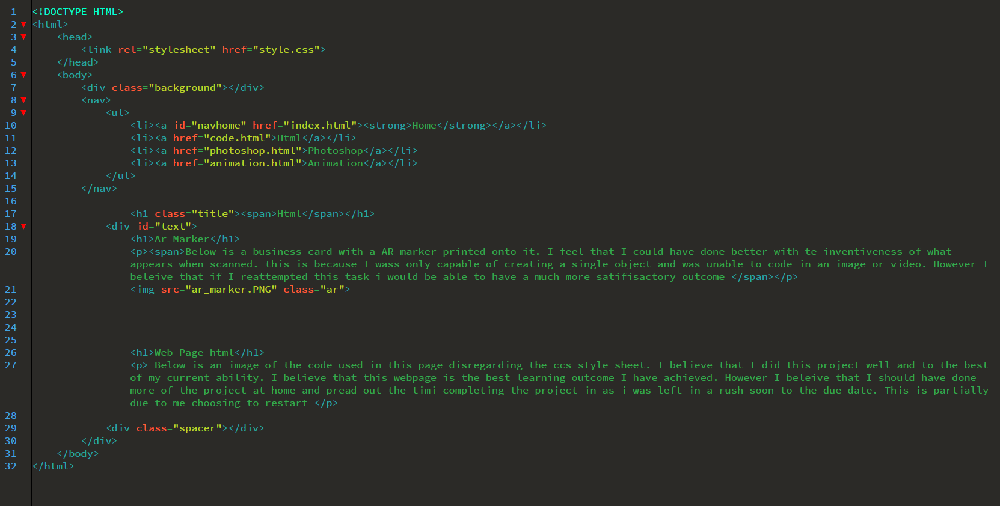

Below is a business card with a AR marker printed onto it. I feel that I could have done better with te inventiveness of what appears when scanned. this is because I wass only capable of creating a single object and was unable to code in an image or video. However I beleive that if I reattempted this task i would be able to have a much more satifisactory outcome
Below is an image of the code used in this page disregarding the ccs style sheet. I believe that I did this project well and to the best of my current ability. I believe that this webpage is the best learning outcome I have achieved. However I beleive that I should have done more of the project at home and pread out the timi completing the project in as i was left in a rush soon to the due date. This is partially due to me choosing to restart
